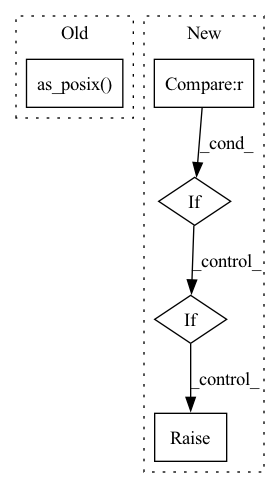

Pattern ID :12257
Before Change
)
onnx_runner = OnnxrtRunner(
SessionFromOnnx(exported_model_path.as_posix() , providers=[self.runtime_provider.value])
)
return onnx_runnerAfter Change
onnx_model_path = (
get_package_path(workdir, model_name) / ExportPYT2ONNX().get_output_relative_path()
).as_posix()
elif framework == Framework.TF2 :
from model_navigator.framework_api.commands.convert.tf import ConvertSavedModel2ONNX
onnx_model_path = (
get_package_path(workdir, model_name) / ConvertSavedModel2ONNX().get_output_relative_path()
).as_posix()
elif raise UserError(f"Unknown framework: {framework.value}")
onnx_runner = OnnxrtRunner(SessionFromOnnx(onnx_model_path, providers=[self.runtime_provider.value]))
In pattern: SUPERPATTERN
Frequency: 3
Non-data size: 5
Instances Fragment ID: 41564799
Project Name: triton-inference-server/model_navigator
Commit Name: 7ac1a1b6dedca92c428c29c9f408625b44d00b70
Time: 2022-04-07
Author: kkleczewski@nvidia.com
File Name: model_navigator/framework_api/commands/performance/onnx.py
M Class Name: PerformanceONNX
N Class Name: PerformanceONNX
M Method Name: _get_runner(6)
N Method Name: _get_runner(5)
M Parent Class: PerformanceBase
N Parent Class: PerformanceBase
M File Name: model_navigator/framework_api/commands/performance/onnx.py
N File Name: model_navigator/framework_api/commands/performance/onnx.py
M Start Line: 46
M End Line: 55
N Start Line: 38
N End Line: 64
Before Change
converted_model_path.parent.mkdir(parents=True, exist_ok=True)
with UserErrorContext():
onnx_runner = OnnxrtRunner(SessionFromOnnx(exported_model_path.as_posix() , providers=[target_device]))
with onnx_runner:
onnx_input_metadata = onnx_runner.get_input_metadata()
After Change
input_model_path = (
get_package_path(workdir, model_name) / ExportPYT2ONNX().get_output_relative_path()
).as_posix()
elif framework == Framework.TF2 :
from model_navigator.framework_api.commands.convert.tf import ConvertSavedModel2ONNX
input_model_path = (
get_package_path(workdir, model_name) / ConvertSavedModel2ONNX().get_output_relative_path()
).as_posix()
elif raise UserError(f"Unknown framework: {framework.value}")
converted_model_path = get_package_path(workdir, model_name) / self.get_output_relative_path()
if converted_model_path.is_file() or converted_model_path.is_dir(): Fragment ID: 41564802
Project Name: triton-inference-server/model_navigator
Commit Name: 7ac1a1b6dedca92c428c29c9f408625b44d00b70
Time: 2022-04-07
Author: kkleczewski@nvidia.com
File Name: model_navigator/framework_api/commands/convert/onnx.py
M Class Name: ConvertONNX2TRT
N Class Name: ConvertONNX2TRT
M Method Name: __call__(10)
N Method Name: __call__(9)
M Parent Class: Command
N Parent Class: Command
M File Name: model_navigator/framework_api/commands/convert/onnx.py
N File Name: model_navigator/framework_api/commands/convert/onnx.py
M Start Line: 68
M End Line: 86
N Start Line: 59
N End Line: 95
Before Change
fs.open(Path(dest_dataset_dict_path, config.DATASETDICT_JSON_FILENAME).as_posix(), "w", encoding="utf-8"),
)
for k, dataset in self.items():
dataset.save_to_disk(Path(dest_dataset_dict_path, k).as_posix() , fs)
@staticmethod
def load_from_disk(dataset_dict_path: str, fs=None, keep_in_memory: Optional[bool] = None) -> "DatasetDict":After Change
is_local = not is_remote_filesystem(fs)
path_join = os.path.join if is_local else posixpath.join
if num_shards is None :
num_shards = {k: None for k in self}
elif raise ValueError(
"Please provide one `num_shards` per dataset in the dataset dictionary, e.g. {{"train": 128, "test": 4}}"
)
Fragment ID: 41564804
Project Name: huggingface/datasets
Commit Name: 232a43943e87dfedcc328a9a3d3b4d89ea5c6627
Time: 2022-12-14
Author: 42851186+lhoestq@users.noreply.github.com
File Name: src/datasets/dataset_dict.py
M Class Name: DatasetDict
N Class Name: DatasetDict
M Method Name: save_to_disk(7)
N Method Name: save_to_disk(3)
M Parent Class: dict
N Parent Class: dict
M File Name: src/datasets/dataset_dict.py
N File Name: src/datasets/dataset_dict.py
M Start Line: 1099
M End Line: 1146
N Start Line: 1101
N End Line: 1194